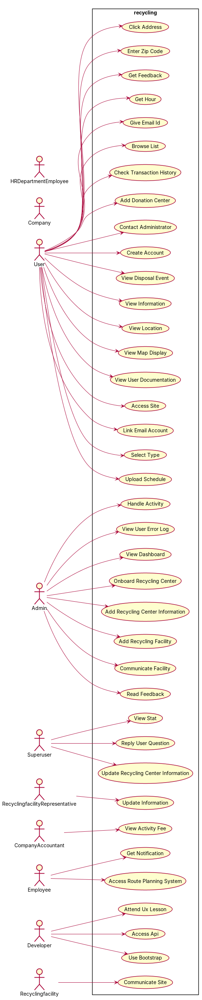
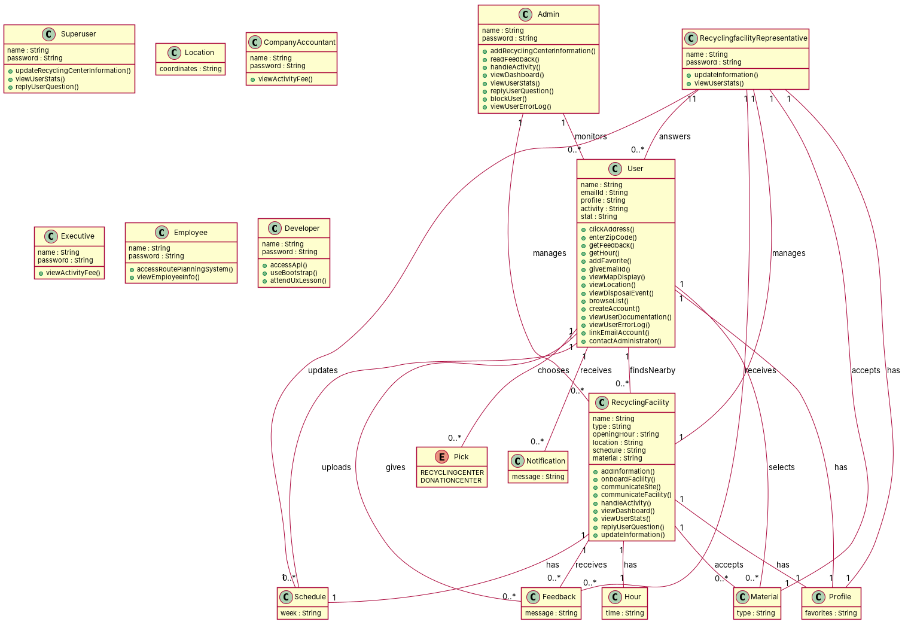

R1: As a user, I want to click on the address, so that it takes me to a new tab with Google Maps. R2: As a user, I want to be able to anonymously view public information, so that I know about recycling centers near me before creating an account. R3: As a user, I want to be able to enter my zip code and get a list of nearby recycling facilities, so that I can determine which ones I should consider. R4: As a user, I want to be able to get the hours of each recycling facility, so that I can arrange drop-offs on my off days or during after-work hours. R5: As a user, I want to have a flexible pick up time, so that I can more conveniently use the website. R6: As a user, I want to be able to select different types of recyclable waste, so I have and get a list of facilities that accept each type and their opening hours, so that I can find an optimal route and schedule. R7: As a user, I want to add donation centers as favorites on my profile, so that I can view them later. R8: As a user, I want to be able to give my email ID, so that I can receive notifications for new events as they are posted. R9: As a user, I want to be able to view a map display of the public recycling bins around my area. R10: As a user, I want to be able to view a map display of the special waste drop off sites around my area. R11: As a user, I want to be able to view the safe disposal events currently being organised around my area. R12: As a user, I want to choose a flexible pick up time, so that I can more conveniently use the website. R13: As a user, I want to view user documentation for the website, so that I know how to use the web app. R14: As a user, I want to get feedback when I enter an invalid zip code. R15: As a user, I want to be able to create an acocunt, so that I can create my own profile. R16: As an admin, I want to be able to add or remove recycling facilities' information, so that users get the most recent information. R17: As an admin, I want to be able to read users' feedback and complaints, so that we can add more features and keep improving the service we provide to them. R18: As a user, I want to be able to check transaction history and keep a record of it, so that I can go back when needed. R19: As a user, I want to have a great UI and UX from the sites, so that I have a pleasant experience when navigating through them. R20: As a user, I want to be able to access the site and do all the other stuffs on all of my electronic devices. R21: As an admin, I want to be able to block specific users based on IP address, so that I can prevent spamming on the websites. R22: As an admin, I want to view a dashboard that monitors all the sites' statuses, so that I can have a sense of what people are doing on our sites and know the service status. R23: As an admin, I want to have all data encrypted, so that important information will not be stolen during a server breach or an attack. R24: As an executive, I want to have full access to data related to my company, so that I can have a sense of my company's performance. R25: As an employee, I want to access the route planning system during work, so that I can be guided through the neighbourhood. R26: As an employee from the HR department, I want to have access to the full information of all employees working for this business. R27: As a developer, I want to access an API from the website, so that I can integrate it and implement certain features in my own iOS application. R28: As a user, I want to be able to receive tempting rewards, so that I have a reason to use the website. R29: As a user, I want to have my personal information kept securely in the database of the website, so that I will not suffer from identity theft or telephone harassment. R30: As an admin, I want to handle all users' activities, so that I can manage more efficiently. R31: As a company, I want to have a website that is easy to use, so that I can upload or delete stuff step by step. R32: As an employee, I want to get quick notifications, so that I can process cases the first time. R33: As a company accountant, I want to view all available activity fees online, so that I can easily create a bill statement. R34: As a developer, I want to use bootstrap in the process of developing, so that I can easily design my website. R35: As a developer, I want to attend some UI/UX lessons, so that I can develop an awesome and beautiful features website. R36: As a user, I want to view all locations of recycling centers on a map, so that I can check which routes to take to drop off waste. R37: As a user, I want to upload my week's schedule, so that I can get recommendations for recycling centers that best fit my availability. R38: As a user, I want to link my email account to my profile, so that I can get a temporary password in case I forget my own one. R39: As a user, I want to contact the administrators, so that I can give feedback or ask for help. R40: As an admin, I want to add recycling center information, so that I can keep the database up-to-date over time. R41: As an admin, I want to view user error logs, so that I can fix or review any issues that are being faced by users of the system. R42: As an admin, I want to onboard recycling centers on the platform, so that I can increase information accuracy. R43: As a superuser, I want to update the recycling center information, so that I can provide the latest information about the recycling center. R44: As a superuser, I want to view users' stats, so that I can view in real-time how many users have visited my recycling center information and their recyclable waste. R45: As a superuser, I want to reply to user questions, so that I can answer any questions about my recycling center. R46: As an admin, I want to be able to have a dashboard that shows usage stats and locations, so that I can identify the neighbourhoods with the largest number of drop-offs and to try getting more facilities involved. R47: As an admin, I want to be able to communicate directly with facilities, so that I can keep them updated about features we have on our website. R48: As a user, I want to be able to browse through the list of facolities and see which ones are environment-friendly, so that I can know for sure my waste is not going to leave a negative ecological footprint. R49: As a recyclingfacility representative, I want to be able to update my information and the type of material I accept, so that I can avoid any miscommunication with users. R50: As a recyclingfacility representative, I want to have access to user stats and schedules, so that I can adjust my hours and/or upgrade equipment and capacity in order to be able to accomodate larger amounts of recyclable materials. R51: As a recyclingfacility, I want to be able to communicate directly with the site admin and convey any issues or concerns I have, so that they fix them.
Red, struck-through: removed by ambiguity removal; green: added.
| actors (11 → 11) |
|---|
| admin |
| company |
| company accountant |
| developer |
| employee |
| employee from the hr department |
| executive |
| recyclingfacility |
| recyclingfacility representative |
| superuser |
| user |
| classes (34 → 32) |
|---|
| Access |
| Admin |
| Area |
| Company |
| CompanyAccountant |
| Dashboard |
| Database |
| Developer |
| DropOff |
| Employee |
| EmployeeFromTheHrDepartment |
| Executive |
| Facility |
| Feedback |
| Hour |
| Issue |
| Location |
| MapDisplay |
| Material |
| Neighbourhood |
| Notification |
| Pick |
| Profile |
| RecyclingCenter |
| RecyclingCenterInformation |
| RecyclingFacility |
| Recyclingfacility |
| RecyclingfacilityRepresentative |
| Schedule |
| Superuser |
| User |
| Waste |
| Work |
| ZipCode |
| attributes (5 → 5) |
|---|
| Company.performance |
| Facility.opening hour |
| Material.amount |
| User.activity |
| User.stat |
| relations (4 → 3) |
|---|
| has: RecyclingCenter -> Location |
| has: RecyclingFacility -> Hour |
| has: User -> Feedback |
| has: User -> Waste |
Enumerations added: PickType {RecyclingCenter, DonationCenter}
| id | req | type | cue | status | readings / explanation |
|---|---|---|---|---|---|
| A1 | R2 | incompleteness | information | rejected | Requirement is incomplete and does not provide enough context to resolve. |
| A2 | R5 | incompleteness | flexible | rejected | Requirement is incomplete and does not provide enough context to resolve. |
| A3 | R6 | coordination | modifier scope: route | resolved | As a user, I want to select different types of recyclable waste, so I can get a list of facilities that accept each type and their opening hours.; As a user, I want to get a list of facilities that accept different types of recyclable waste and their opening hours, so I can select the one that best suits my needs. The requirement is ambiguous as to whether the user selects the types of waste or gets a list of facilities. |
| A4 | R7 | referential | them | resolved | As a user, I want to add donation centers as favorites on my profile, so that I can view them later.; As a user, I want to add donation centers as favorites on my profile, so that I can view them later, and they are not related to recycling centers. The requirement is ambiguous as to whether the favorites are related to recycling centers or donation centers. |
| A5 | R8 | referential | they | resolved | As a user, I want to give my email ID, so that I can receive notifications for new events as they are posted.; As a user, I want to give my email ID, so that I can receive notifications for new events as they are posted, and they are related to recycling centers. The requirement is ambiguous as to whether the email ID is related to recycling centers or general notifications. |
| A6 | R12 | incompleteness | flexible | rejected | Requirement is incomplete and does not provide enough context to resolve. |
| A7 | R16 | incompleteness | information | open | Requirement is incomplete and does not provide enough context to resolve. |
| A8 | R17 | referential | them | resolved | As an admin, I want to read users' feedback and complaints, so that we can add more features and keep improving the service we provide to them.; As an admin, I want to read users' feedback and complaints, so that we can add more features and keep improving the service we provide to the users. The requirement is ambiguous as to whether the service is provided to the users or to the admin. |
| A9 | R18 | referential | it | resolved | As a user, I want to check transaction history and keep a record of it, so that I can go back when needed.; As a user, I want to check transaction history and keep a record of it, so that I can go back when needed, and it is related to recycling centers. The requirement is ambiguous as to whether the transaction history is related to recycling centers or general transactions. |
| A10 | R19 | incompleteness | modifier scope: UI | rejected | Requirement is incomplete and does not provide enough context to resolve. |
| A11 | R20 | incompleteness | stuffs | rejected | Requirement is incomplete and does not provide enough context to resolve. |
| A12 | R23 | coordination | noun or noun | resolved | As an admin, I want to have all data encrypted, so that important information will not be stolen during a server breach or an attack.; As an admin, I want to have all data encrypted, so that important information will not be stolen during a server breach or an attack, and it is related to recycling centers. The requirement is ambiguous as to whether the data is related to recycling centers or general data. |
| A13 | R23 | incompleteness | information | rejected | Requirement is incomplete and does not provide enough context to resolve. |
| A14 | R26 | incompleteness | information | rejected | Requirement is incomplete and does not provide enough context to resolve. |
| A15 | R27 | referential | it | resolved | As a developer, I want to access an API from the website, so that I can integrate it and implement certain features in my own iOS application.; As a developer, I want to access an API from the website, so that I can integrate it and implement certain features in my own iOS application, and it is related to recycling centers. The requirement is ambiguous as to whether the API is related to recycling centers or general APIs. |
| A16 | R27 | incompleteness | certain | rejected | Requirement is incomplete and does not provide enough context to resolve. |
| A17 | R29 | incompleteness | noun or noun | open | Requirement is incomplete and does not provide enough context to resolve. |
| A18 | R29 | incompleteness | information | rejected | Requirement is incomplete and does not provide enough context to resolve. |
| A19 | R31 | incompleteness | stuff | rejected | Requirement is incomplete and does not provide enough context to resolve. |
| A20 | R35 | quantifier | some | rejected | Requirement is incomplete and does not provide enough context to resolve. |
| A21 | R40 | incompleteness | information | rejected | Requirement is incomplete and does not provide enough context to resolve. |
| A22 | R41 | quantifier | any | resolved | As an admin, I want to view user error logs, so that I can fix or review any issues that are being faced by users of the system.; As an admin, I want to view user error logs, so that I can fix or review any issues that are being faced by users of the system, and it is related to recycling centers. The requirement is ambiguous as to whether the user error logs are related to recycling centers or general user error logs. |
| A23 | R42 | incompleteness | information | rejected | Requirement is incomplete and does not provide enough context to resolve. |
| A24 | R43 | incompleteness | information | rejected | Requirement is incomplete and does not provide enough context to resolve. |
| A25 | R44 | quantifier | many | resolved | As a superuser, I want to view users' stats, so that I can view in real-time how many users have visited my recycling center information and their recyclable waste.; As a superuser, I want to view users' stats, so that I can view in real-time how many users have visited my recycling center information and their recyclable waste, and it is related to recycling centers. The requirement is ambiguous as to whether the users' stats are related to recycling centers or general users' stats. |
| A26 | R44 | incompleteness | information | rejected | Requirement is incomplete and does not provide enough context to resolve. |
| A27 | R45 | quantifier | any | resolved | As a superuser, I want to reply to user questions, so that I can answer any questions about my recycling center.; As a superuser, I want to reply to user questions, so that I can answer any questions about my recycling center, and it is related to recycling centers. The requirement is ambiguous as to whether the user questions are related to recycling centers or general user questions. |
| A28 | R49 | coordination | modifier scope: information (relative clause) | resolved | As a recyclingfacility representative, I want to be able to update my information and the type of material I accept, so that I can avoid any miscommunication with users.; As a recyclingfacility representative, I want to be able to update my information and the type of material I accept, so that I can avoid any miscommunication with users, and it is related to recycling centers. The requirement is ambiguous as to whether the information and material are related to recycling centers or general information and material. |
| A29 | R49 | incompleteness | any | rejected | Requirement is incomplete and does not provide enough context to resolve. |
| A30 | R49 | incompleteness | information | rejected | Requirement is incomplete and does not provide enough context to resolve. |
| A31 | R51 | referential | they | resolved | they refer to the recyclingfacility; they refer to the site admin The use of 'they' is ambiguous as it could refer to either the recyclingfacility or the site admin. |
| A32 | R51 | referential | them | resolved | them refer to the recyclingfacility; them refer to the site admin The use of 'them' is ambiguous as it could refer to either the recyclingfacility or the site admin. |
| A33 | R51 | coordination | and+or | resolved | communicate directly with the site admin and convey any issues or concerns I have; communicate directly with the site admin or convey any issues or concerns I have The use of 'and/or' suggests a choice between the two actions. |
| A34 | R51 | quantifier | any | resolved | convey any issues or concerns I have; convey all issues or concerns I have The use of 'any' is ambiguous as it could mean 'any' or 'all' issues or concerns. |


"""Code skeleton generated from the shared model of D1/recycling.
Every class and method records the requirement(s) it traces to."""
from __future__ import annotations
import dataclasses as _dc
import enum as _enum
import typing as _t
@_dc.dataclass
class User:
"""Source: R2, R3, R4, R5, R6, R7, R8, R9, R10, R11, R12, R13, R14, R15, R18, R19, R20, R28, R29, R38, R39"""
name: _t.Optional[str] = None
emailId: _t.Optional[str] = None
profile: _t.Optional[str] = None
activity: _t.Optional[str] = None
stat: _t.Optional[str] = None
notifications: _t.List["Notification"] = _dc.field(default_factory=list)
feedbacks: _t.List["Feedback"] = _dc.field(default_factory=list)
recyclingFacilities: _t.List["RecyclingFacility"] = _dc.field(default_factory=list)
picks: _t.List["Pick"] = _dc.field(default_factory=list)
materials: _t.List["Material"] = _dc.field(default_factory=list)
schedules: _t.List["Schedule"] = _dc.field(default_factory=list)
def clickAddress(self) -> None:
"""Realizes UC1 "Click Address" (R1)."""
raise NotImplementedError
def enterZipCode(self) -> None:
"""Realizes UC2 "Enter Zip Code" (R3)."""
raise NotImplementedError
def getFeedback(self) -> None:
"""Realizes UC3 "Get Feedback" (R14)."""
raise NotImplementedError
def getHour(self) -> None:
"""Realizes UC4 "Get Hour" (R4)."""
raise NotImplementedError
def addFavorite(self) -> None:
"""Realizes UC10 "Add Donation Center" (R7)."""
raise NotImplementedError
def giveEmailId(self) -> None:
"""Realizes UC6 "Give Email Id" (R8)."""
raise NotImplementedError
def viewMapDisplay(self) -> None:
"""Realizes UC22 "View Map Display" (R9, R10)."""
raise NotImplementedError
def viewLocation(self) -> None:
"""Realizes UC21 "View Location" (R9, R10)."""
raise NotImplementedError
def viewDisposalEvent(self) -> None:
"""Realizes UC19 "View Disposal Event" (R11)."""
raise NotImplementedError
def browseList(self) -> None:
"""Realizes UC8 "Browse List" (R48)."""
raise NotImplementedError
def createAccount(self) -> None:
"""Realizes UC16 "Create Account" (R15)."""
raise NotImplementedError
def viewUserDocumentation(self) -> None:
"""Realizes UC24 "View User Documentation" (R13)."""
raise NotImplementedError
def viewUserErrorLog(self) -> None:
"""Realizes UC25 "View User Error Log" (R41)."""
raise NotImplementedError
def linkEmailAccount(self) -> None:
"""Realizes UC29 "Link Email Account" (R38)."""
raise NotImplementedError
def contactAdministrator(self) -> None:
"""Realizes UC15 "Contact Administrator" (R39)."""
raise NotImplementedError
@_dc.dataclass
class RecyclingFacility:
"""Source: R3, R4, R6, R10, R11, R16, R17, R20, R22, R23, R24, R26, R30, R32, R33, R34, R35, R36, R37, R39, R40, R41, R42, R43, R44, R45, R46, R47, R48, R50, R51"""
name: _t.Optional[str] = None
type: _t.Optional[str] = None
openingHour: _t.Optional[str] = None
location: _t.Optional[str] = None
schedule: _t.Optional[str] = None
material: _t.Optional[str] = None
hour: _t.Optional["Hour"] = None
materials: _t.List["Material"] = _dc.field(default_factory=list)
profile: _t.Optional["Profile"] = None
feedbacks: _t.List["Feedback"] = _dc.field(default_factory=list)
def addInformation(self) -> None:
"""Realizes UC11 "Add Recycling Center Information" (R40)."""
raise NotImplementedError
def onboardFacility(self) -> None:
"""Realizes UC30 "Onboard Recycling Center" (R42)."""
raise NotImplementedError
def communicateSite(self) -> None:
"""Realizes UC14 "Communicate Site" (R51)."""
raise NotImplementedError
def communicateFacility(self) -> None:
"""Realizes UC13 "Communicate Facility" (R47)."""
raise NotImplementedError
def handleActivity(self) -> None:
"""Realizes UC7 "Handle Activity" (R30)."""
raise NotImplementedError
def viewDashboard(self) -> None:
"""Realizes UC18 "View Dashboard" (R22, R46)."""
raise NotImplementedError
def viewUserStats(self) -> None:
"""Operation."""
raise NotImplementedError
def replyUserQuestion(self) -> None:
"""Realizes UC32 "Reply User Question" (R45)."""
raise NotImplementedError
def updateInformation(self) -> None:
"""Realizes UC34 "Update Information" (R49)."""
raise NotImplementedError
@_dc.dataclass
class Admin:
"""Source: R16, R17, R21, R22, R23, R24, R26, R30, R32, R34, R41, R46, R47"""
name: _t.Optional[str] = None
password: _t.Optional[str] = None
recyclingFacilities: _t.List["RecyclingFacility"] = _dc.field(default_factory=list)
users: _t.List["User"] = _dc.field(default_factory=list)
def addRecyclingCenterInformation(self) -> None:
"""Realizes UC11 "Add Recycling Center Information" (R40)."""
raise NotImplementedError
def readFeedback(self) -> None:
"""Realizes UC31 "Read Feedback" (R17)."""
raise NotImplementedError
def handleActivity(self) -> None:
"""Realizes UC7 "Handle Activity" (R30)."""
raise NotImplementedError
def viewDashboard(self) -> None:
"""Realizes UC18 "View Dashboard" (R22, R46)."""
raise NotImplementedError
def viewUserStats(self) -> None:
"""Operation."""
raise NotImplementedError
def replyUserQuestion(self) -> None:
"""Realizes UC32 "Reply User Question" (R45)."""
raise NotImplementedError
def blockUser(self) -> None:
"""Operation."""
raise NotImplementedError
def viewUserErrorLog(self) -> None:
"""Realizes UC25 "View User Error Log" (R41)."""
raise NotImpl
| python_compiles | True |
|---|---|
| java_compiles | True |
| attribute_mismatches | 0 |
| method_mismatches | 0 |
| use_cases | 38 |
| use_cases_without_actor | 0 |
| use_cases_without_method | 7 |
| actors_without_use_case | 2 |
| relations_to_unknown_class | 0 |
| inconsistencies | 9 |
| inconsistency_rate | 0.1385 |
| requirement_coverage | 0.9804 |
| validator fixes | |
| assumptions for open ambiguities | [{"tag": "A3", "assumption": "The 'information' in R16 is assumed to be related to the 'RecyclingFacility' class."}, {"tag": "R29", "assumption": "The 'noun or noun' in R29 is assumed to be related to the 'User' class."}] |
| element | P | R | F1 | TP/FP/FN |
|---|---|---|---|---|
| classes | 0.316 | 0.6 | 0.414 | 6/13/4 |
| relations | 0.15 | 0.333 | 0.207 | 3/17/6 |
| use_cases_provisional | 0.895 | 0.68 | 0.773 | 34/4/16 |